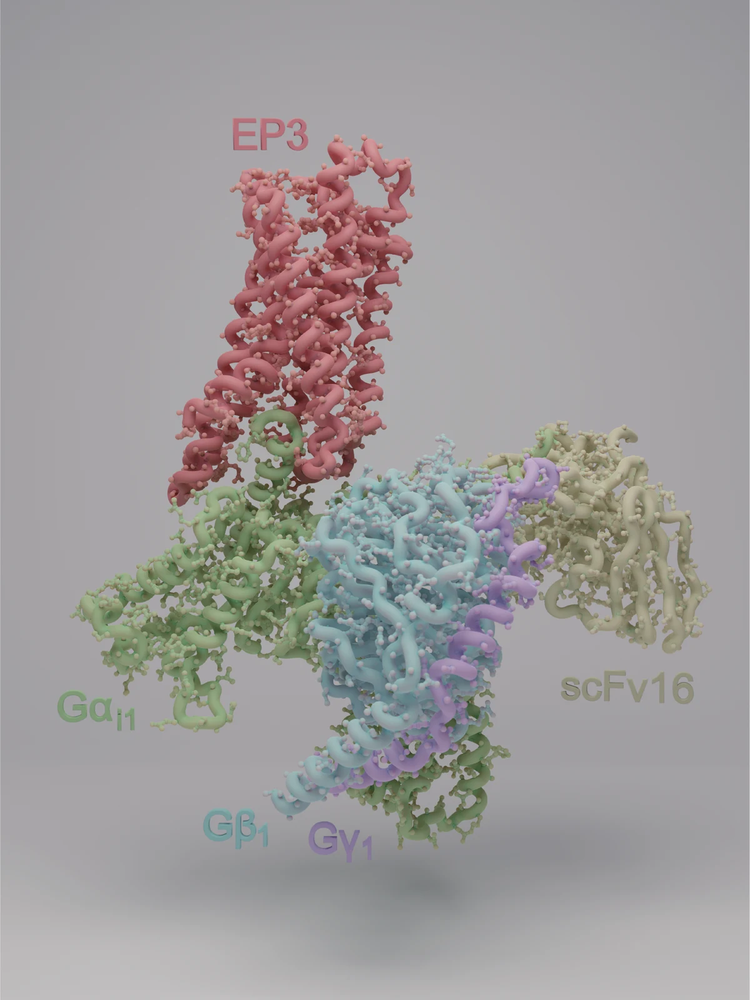

高品質な蛋白質標品の生産
標的ごとに昆虫細胞・哺乳類細胞などの発現系を構築し、膜タンパク質の可溶化・精製・複合体形成を経て、均一性・安定性・活性を確認した標品を調製します。すべての研究はここから始まります。
High-quality membrane-protein preparations: expression, purification, complex formation and quality control.
Protein Science Group · Kansai Medical University
Protein science for drug discovery.
私たちの技術的な強みは、GPCRをはじめとする膜タンパク質を高品質な標品として生産する技術です。その標品を起点に、クライオ電子顕微鏡による構造解析と、抗体・monobody/nanobody・de novoバインダー・低分子（DELスクリーニング）といった標的の機能を制御する分子の創出を進めています。目指すのは、タンパク質の機能を制御する多様なモダリティーを生み出し、新しい医薬品へと発展させることです。

Research focus
Protein production, structure determination and molecular discovery form one continuous workflow toward new medicines.
Protein Production→Structure→Molecular Discovery→Drug Development
標的ごとに昆虫細胞・哺乳類細胞などの発現系を構築し、膜タンパク質の可溶化・精製・複合体形成を経て、均一性・安定性・活性を確認した標品を調製します。すべての研究はここから始まります。
High-quality membrane-protein preparations: expression, purification, complex formation and quality control.
クライオ電子顕微鏡を中心に、GPCRをはじめとする膜タンパク質のさまざまな機能状態を捉え、薬理学的な機能解析と組み合わせて、リガンド認識とシグナル選択性の分子機構を明らかにします。
Cryo-EM structures of functional states, connected to signaling mechanisms.
高品質な標品を用いて、抗体、monobody/nanobody（共同研究）、AIを活用したde novoバインダー、DELスクリーニングによる低分子など、標的の状態と機能を選択的に制御する分子を創出します。これらを機能性モダリティーとして育て、医薬品への発展を目指します。
Antibodies, monobodies/nanobodies, de novo binders and small molecules that control target function — developed toward new medicines.
Core expertise & approaches
膜タンパク質の生産技術と、それを起点とする構造解析・制御分子の創出を、GPCRからより幅広い創薬標的へ展開しています。
昆虫細胞・哺乳類細胞などの発現系構築、膜タンパク質の可溶化・精製・複合体形成、品質評価までを一貫して行い、構造解析やスクリーニングに耐える標品を調製します。
オピオイド受容体、オレキシン受容体、プロスタグランジンE2受容体、ムスカリン受容体、ボンベシン受容体などを主な研究対象としています。
膜タンパク質とその複合体の高分解能構造を決定し、創薬に使える構造情報を取得します。
リガンド依存的な機能やシグナル選択性を定量し、構造情報と結び付けて理解します。
抗体生産、AIを活用したde novoバインダー設計、DELスクリーニングによる低分子探索を研究室内で行い、monobody/nanobodyは共同研究により取得します。標的の機能を制御する分子を多様な形式で創出します。
得られた分子を、構造ベース創薬やAIによる分子設計で磨き上げ、タンパク質の機能を制御する機能性モダリティーとして新しい医薬品へと発展させることを目指します。
Protein Science Group
関西医科大学 医化学講座で、教員・研究員・技術スタッフ・大学院生・外研学生が連携しながら研究を進めています。
蛋白質科学を軸に、構造生物学・薬理学・分子探索を横断し、創薬標的の分子機構の解明と制御分子の創出に取り組んでいます。
修士課程・博士課程・社会人博士課程の大学院生、日本学術振興会特別研究員（学振）の受け入れも積極的に行っています。
Collaboration
アカデミアとの共同研究に加え、製薬・バイオ関連企業6社との共同研究実績があります。創薬標的タンパク質の生産、構造解析、機能解析、抗体・de novoバインダー・低分子（DELスクリーニング）といった制御分子の創出を、目的に応じて組み合わせて進めます。企業名および個別プロジェクトの内容は公開していません。